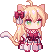
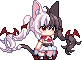
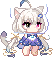

人物与剧情
16 位人物与 5 个结局。点击结局直接展开完整版内容；查看人物完整档案时，剧透仍保持收起。
结局一览


人物档案
喵露露
长着猫耳与长尾巴的少女，也是本作主角。她擅长用咸鱼近距离战斗，以灵活的身手应对敌人。
查看完整档案
菓酱
出售各种道具的商人，也经常参与此次异变的调查。
查看完整档案

莉莉亚
出身没落贵族家庭的大小姐，也是喵露露最好的朋友。
查看完整档案
樱
魔法学校的校长，很喜欢熊玩偶。她关心喵露露，力排众议让她进入学校学习。
查看完整档案
莲
居住在浮游高塔，负责维护其中的图书室。
查看完整档案
心渊
住在冰雪山丘深处，性格胆怯，不太擅长与人交往。
查看完整档案

德古拉
实力强大的吸血鬼，追求力量，也尊重强者。
查看完整档案

缇娅
知识丰富、双眼颜色不同的外星猫娘。
查看完整档案
喵可莉
梳着双马尾的金发少女，拥有与外表年龄不相符的成熟心智，表现得可靠而沉稳。
查看完整档案
莉伊
莉珑的妹妹，掌握强大的空间魔法，一直努力寻找姐姐。
查看完整档案
璃音
与樱、莉珑同属三魔法使的少女。
查看完整档案
瘟疫魔女
与游戏中瘟疫事件有关的魔女。
查看完整档案
往昔的少女
身份与剧情含剧透，进入完整档案后可按需展开。
查看完整档案
奇怪的生物
一只奇怪的猫猫头，常常四处蹭吃蹭喝。
查看完整档案
橘花花
樱饲养的猫，在异变发生后变成人形。
查看完整档案
莉珑
知识渊博、性格温柔而意志坚定的少女，也是莉伊的姐姐。
查看完整档案
人物文字摘编自萌娘百科及其贡献者，各档案保留原文链接、CC BY-NC-SA 4.0 许可与改写说明。